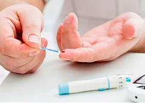
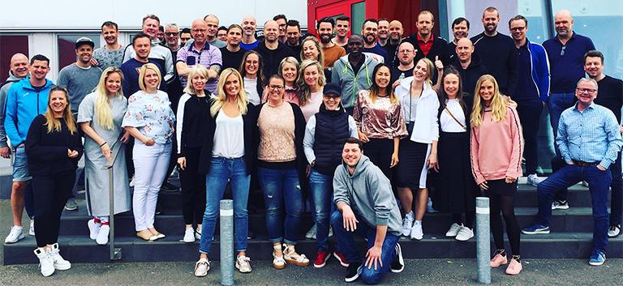
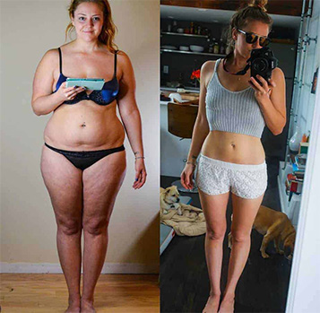
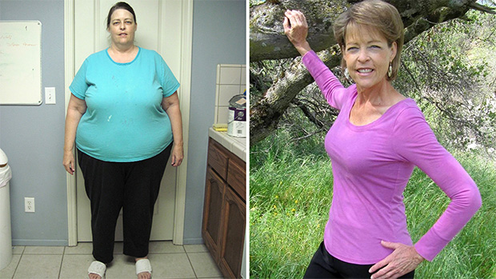
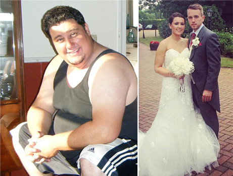

Balss traucējumi ir briesmīgas slimības simptoms
Zīdīšana ar koronavīrusu un gripu
Liekais svars un 2. tipa diabēts: izdzīvojušā pacienta kļūdas
Saskaņā ar PVO datiem, vairāk nekā 39% cilvēku pasaulē ir liekais svars. Diemžēl tā ir ne tikai estētiska problēma, bet arī nopietns drauds veselībai.
Papildu kilogrami var izraisīt sirds un asinsvadu sistēmas slimības, cukura diabētu, muskuļu un skeleta sistēmas slimības un elpošanas problēmas. Jūsu pašnovērtējums cieš, un tas ir tiešs ceļš uz depresiju un pat domām par pašnāvību!
Kā zaudēt svaru vienreiz un uz visiem laikiem?
Vai ir iespējams zaudēt svaru bez sporta un diētām?
Uz šiem un citiem jautājumiem atbildēja Medicīnas universitātes studente, uztura pētniece un inovatīvas tauku dedzināšanas produkta radītājs Laura Simsone.
Šodien Lauras izgudrojums ir palīdzējis tūkstošiem cilvēku visā pasaulē.

Korespondents: Laura, Jūs pirms dažiem gadiem saņēmāt lielu stipendiju Jūsu pašu pētījumiem un Jūs ar to varējāt darīt jebko. Kāpēc izvēle krita uz uzturu? Jūs pati esat diezgan slaida meitene.
Laura: Paldies. Patiešām, kad saņēmu stipendiju, daudzi universitātes profesori vēlējās strādāt ar mani, bet es izvēlējos savu ceļu. Kāpēc uzturs? Tas skanēs naivi, bet es gribēju palīdzēt savai mammai. Viņai bijusi grūta dzīve - tēvs mūs pameta 2008. gada krīzes laikā, kad mans brālis un es vēl bijām mazi. Mamma strādāja dienu un nakti, lai mūs pabarotu. Protams, neviens neaizdomājās par pareizu uzturu un it īpaši sportu, tādēļ visi ikdienas steigā apēstie ēdieni bija nogulsnējušies uz jostasvietas un gurniem. Mammai parādījās daudz kompleksu, personīgajai dzīvei viņa atmeta ar roku. Bet tas nav pareizi, sievietei jebkurā vecumā vajadzētu palikt sievietei. Mamma iztērēja daudz naudas, bija visa veida diētas, tabletes, tējas, ekstrēmās diētas, bet viss svars, ko izdevās nomest, drīz vien atgriezās. Tāpēc es sāku aktīvi pētīt šo jautājumu. Par laimi, medicīniskā izglītība ļauj iedziļināties tauku dedzināšanas procesos to ķīmiskajā līmenī.
Korespondents: Un ko jūs uzzinājāt?
Laura: Īsāk sakot, tas, ko mēs zinām par svara zaudēšanu, nedarbojas. Kaloriju skatīšana ne vienmēr dod vēlamo rezultātu - mēs visi pazīstam apaļīgas sievietes, kuras ēd ļoti maz, un tajā pašā laikā ir aktīva dzīvesveida piekritējas, bet nevar zaudēt svaru. Un jēga nav kaloriju skaitā, par kuru visi runā, bet gan vielmaiņas procesos - kur ķermenis uzņem enerģiju un kā to patērē. Un tas ir pārsteidzoši, ka mēs spējam piespiest ķermeni uzņemt enerģiju nevis no parastajiem ogļhidrātiem, bet no taukiem, no mūsu pašu tauku krājumiem. Elementus, kurus šūnas izmanto uzturā, sauc par ketoniem, un visu procesu sauc par ketozi. Parasti, kad ogļhidrātu rezerves ir izsmeltas, ķermenis lēnām pārvērš tauku un muskuļu šūnas glikozē. Ketozes procesā tauku krājumi tiek nekavējoties pārveidoti enerģijā. Vienkārši sakot, mēs zaudējam svaru, kamēr ķermenis turpina normāli darboties.
Korespondents: tas nu gan ir negaidīti! Un kā iedarbināt šo procesu?
Laura: Šeit sākas interesantais. Ketozes iedarbināšanai nevar vienkārši ierobežot uzņemto ogļhidrātu daudzumu - lai gan sākotnēji tas bija tas, ko es ieteicu mātei. Kādu laiku viņa drosmīgi sēdēja uz Dikāna diētas, ēda tikai vistas krūtiņu un salātus, taču viņa visu laiku bija izsalkusi. Es viņu nevainoju, neviens normāls cilvēks nevar izturēt pastāvīgu bada sajūtu, vājumu un aizvien pieaugošu aizkaitināmību. Rezultātā neizbēgami notiek sabrukums, nekontrolēta pārēšanās, vainas apziņa par apēsto - un tā tālāk, pa apli. Galu galā, kad mēs vienkārši samazinām ogļhidrātus un neko nekompensējam, patiesībā tas mūsu ķermenim ir bads, un tas nevienam nav palīdzējis zaudēt svaru un saglabāt rezultātu.
Pavisam cita lieta ir keto diēta. Šī ir diēta ar augstu tauku saturu, kurā mēs ēdam olbaltumvielas kā parasti un pēc iespējas mazāk ogļhidrātu. Šī kombinācija spēj pilnībā mainīt visu vielmaiņu, un tauki viegli sadalās taukskābēs un tajos pašos ketonu ķermeņos, uzsākot tauku sadedzināšanas procesu. Keto ideja nav jaunums, jau 20. gados (un tas ir gandrīz pirms simts gadiem!) Dr. Rasels Vilders pamanīja ketonu īpašās īpašības. Tiesa, viņš to izmantoja epilepsijas lēkmju ārstēšanai.
Korespondents: Vai var apgalvot, ka keto diēta ir efektīva ne tikai svara zaudēšanai?
Laura: Pareizi! Mūsdienās šāda veida uzturu izmanto arī migrēnas, cukura diabēta, metaboliskā sindroma un pat Alcheimera slimības ārstēšanā. Nav pārsteidzoši, ka, to zinot, cilvēki mēdz uzturēt ķermeni ketozē, lai palielinātu darba spējas, fizisko izturību un, protams, zaudētu svaru.
Korespondents: Iespaidīgi. Sakiet, vai tiešām viss ir tik vienkārši un šādas diētas ieturēšanai nerada problēmas?
Laura: Jūs uzdevāt ļoti pareizu jautājumu. Veicot zinātnisko darbu par ketozes tēmu, es arvien vairāk un vairāk pārliecinājos, ka šāda veida ēdieni ir piemēroti visiem un tiem praktiski nebija kontrindikāciju. Tas nevar kaitēt vai neizdoties. Bet man bija ne tikai darbs laboratorijā, bet arī reāls testa subjekts - mana māte. Mammai salīdzinoši patika zaudēt svaru keto uztura ietvaros, viņa nejuta badu un nepārēdās nekontrolētos vājuma brīžos, un jau pirmajā mēnesī viņa nometa veselus 16 kg, bet ... tomēr tas ir īpašs ēšanas stils. Jums ir jākontrolē diēta, lai iegūtu nepieciešamo devu veselīgu tauku (ne visi tauki ir vienādi veselīgi). Un ogļhidrātu uzkodas ir daudz pieejamākas, piemērotu tauku avotu atrast ir grūtāk. Tātad mēs atkal atgriežamies pie ēšanas paradumu pārstrukturēšanas problēmas. Ēdiena gatavošana prasa daudz laika - strādājot pilnu slodzi, šī nav gluži tā ērtākā opcija.
Es sāku prātot, kā organizēt uzturu tā, lai iekustinātu ketozes procesu, bet tajā pašā laikā nemainītu esošo dzīves veidu. Man daudz palīdzēja mans pētījuma vadītājs, profesors Haralds Grīnbergs. Viņš ieteica man padomāt par uztura bagātinātāju, kas aktivizētu ketonus un tādējādi izraisītu ketozi. Mēs strādājām laboratorijā līdz naktij, pētot dažādas sastāvdaļas un strādājot pie receptēm. Un tagad, pēc mēnešiem ilga darba, mūsu tauku dedzināšanas kokteilis ir gatavs.
Korespondents: Kokteilis? Un kas ir iekļauts tā sastāvā?
Laura: Jā, jūs vienkārši aplejat šo pulveri un sanāk kokteilis. Kas attiecas uz sastāvu, es nedomāju, ka varu par to runāt. Negodīgi farmācijas uzņēmumi to vien gaida, lai izveidotu kaut ko līdzīgu un pārdotu ar milzīgu peļņu. Mums bija pat spiegošanas mēģinājumi! Tāpēc es teikšu tikai to, ka sastāvs ir 100% dabīgs. Tur Jūs neatradīsit neko eksotisku, viss noslēpums ir sastāvdaļu sinerģijā, katra no tām pastiprina pārējās. Un, protams, tas viss ir bez mākslīgiem saldinātājiem, krāsvielām vai konservantiem. Tātad Jūs varat neuztraukties par uz savu veselību. Ir pieejami visi kvalitātes sertifikāti, kā arī pētījumu rezultāti.
Ir pienācis laiks sarunāties ar profesoru Grīnbergu, Lauras Simsones pētījumu vadītāju.
Haralds Grīnbergs — Ph.D. bioķīmijā un molekulārajā bioloģijā, Metaboliskās veselības nodaļas vecākais eksperts, viesprofesors, Endokrinoloģijas, diabēta un metabolisma klīnika, Medicīnas universitāte, goda dietologs.
Prof. Grīnberga kontā ir 25 zinātniski darbi, kuru rezultātus izmanto dietologi ASV, Rietumeiropā un Austrālijā.
Korespondents: Sveicināti, Prof. Grīnberg! Laura jau pastāstīja par to, kā sadarbojāties, lai izveidotu keto kokteili. Vai varat pastāstīt vairāk par klīniskajiem pētījumiem?
Prof. Grīnbergs: Labdien. Jā, Laura ir tik talantīga, labsirdīga un gudra meitene. Gribēja palīdzēt savai mātei, bet rezultātā palīdzēja simtiem, nē, tūkstošiem sieviešu un vīriešu visā pasaulē. Jā, vīrieši pārāk daudz nerunā par savu svara zaudēšanu, bet ticiet man, viņi arī vēlas būt slaidi un jauneklīgi ar minimālu piepūli.
Tātad, atgriezīsimies pie pētījumiem. Mēs izvēlējāmies 80 pacientus (22 vīriešus un 58 sievietes), kuru ĶMI ir lielāks par 35. Visi viņi turpināja ēst kā parasti un starp ēdienreizēm mēs lietojām kokteili - divas reizes dienā. Starp citu, starp subjektiem bija Alma, Lauras māte. Pirmajās 4 nedēļās viņi vidēji zaudēja 17 kg, bet maksimālais rezultāts bija 22 kg. Bet mēs nepriecājāmies pirms laika - daudzas zāles un diētas dod ātru rezultātu, tad svara zudums palēninās, pat sāk iet pretējā virzienā. Tāpēc bija svarīgi ievērot otrā un trešā testēšanas mēneša dinamiku. Mums par pārsteigumu, skaitļi bija nedaudz zemāki, taču joprojām augsti - attiecīgi 13 un 10 kg. Es to attiecinu uz faktu, ka dalībnieki sāka atgriezties normālā svarā.
Viena no priekšrocībām ir tā, ka nezaudējat vairāk, nekā nepieciešams. Tikai liekie tauki aiziet prom, tāpēc nav jāuztraucas par savu veselības stāvokli. Tauki pazūd un nekad neatgriežas. Vismaz tā redzams no pētījumu rezultātiem. Paskatieties, cik skaista ir Alma Simsone.
Prof. Grīnbergs: Bet pats labākais, ka rezultāti pēc lietošanas izrādījās pat labāki nekā citos pētījumos, kur cilvēki vadījās pēc klasiskās keto diētas. Es domāju, ka noslēpums slēpjas tajā, ka ilgstoša zemu ogļhidrātu diētas uzturēšana ir ļoti problemātiska ... Ir grūti atteikties no picas draugu lokā vai deserta. Pavisam cita lieta ir dzert gardu tauku dedzināšanas kokteili un tajā pašā laikā nemainīt savu uzturu.
Korespondents: Ko Jūs vēlaties ar to pateikt?
Prof. Grīnbergs: Viss ir vienkārši, cilvēki bieži padodas kārdinājumam un pārtrauc keto diētu, bet ar kokteili šādas problēmas nav. Saprotiet, ja tas būtu tik vienkārši, mums nebūtu aptuveni 38,2% aptaukojušos cilvēku. Internets ir pilns ar informāciju par pareizu uzturu, taču zināt un pieturēties pie tā ir divas dažādas lietas. Tāpēc, kad mēs runājam par uzturu un dzīvesveidu, nevar būt nekādas runas par eksperimenta tīrību!
Laura Simsone un Haralds Grīnbergs deva mums piekļuvi testa grupas dalībnieku kontaktiem, lai mēs personīgi pārliecinātos efektivitāti.
“Tagad beidzot ir pienācis tas laimīgais laiks, kad es nebaidos nosaukt savu vecumu. Jā, man tiešām ir 25 gadi, nevis 40, kā tas var šķist vecās fotogrāfijās. Laura ir mana klasesbiedrene un ilggadēja draudzene. Viņa zināja visu par manām svara un pašnovērtējuma problēmām, tāpēc, tiklīdz viņa izstrādāja formulu, viņa nekavējoties piezvanīja un piedāvāja piedalīties eksperimentā. Un es nopriecājos, nebija jau arī nekā zaudējama - gan veselība, gan izskats bija ārkārtīgi sliktā stāvoklī. Tad nu lūk, ko teikšu: ne tikai palīdzēja man atbrīvoties no 27 liekajiem kilogramiem, bet arī palīdzēja atjaunot manu veselību. Holesterīns ir normāls, arī cukurs ir normas robežās, hroniskais nogurums, ar kuru es cīnījos kopš vidusskolas sākuma, ir izzudis. Kopš pētījuma jau ir pagājuši 2 gadi, bet es neesmu pieņēmusies svarā ne par vienu kilogramu. Svars stāv uz vietas!”
“Manā vecumā jebkuras izmaiņas ir grūtas, un, kā saka ārsti, vielmaiņa nav vairs tāda, kā bija jaunībā. Un tad mans ģimenes ārsts, uzzinot par maniem bezgalīgajiem mēģinājumiem tikt galā ar svaru, pastāstīja par jauna svara zaudēšanas līdzekļa izpēti. Nodomāju: „Nu, ja tas ir bez maksas, tad kāpēc gan ne.“ Turklāt viss notiek ārstu uzraudzībā, kas nozīmē, ka tas ir droši. Es biju ļoti priecīga, kad uzzināju, ka mani uzņems pētījumā - tā bija zīme no augšas, ka tagad dzīve mainīsies. Un tā tas notika: -33 kg, kuri mani apsēduši kopš pirmās meitas dzimšanas, acu priekšā sāka kust. Turklāt man pat nevajadzēja neko darīt – ēdu iecienītos makaronus, uzdzēru vīnu, neaizmirstot par - un tas arī viss. Dievs, svēti šo meiteni, Lauru, viņas izgudrojums mainīja manu dzīvi. Tagad es burtiski lidoju.”
“Cik atceros, es vienmēr biju tukls, lai gan treknu ēdienu ēdu tikai brīvdienās un visas darba dienas svīdu darbā un zālē. Bija kauns tik smagi trenēties un neredzēt progresu. Kad uzzināju par programmu, parādījās cerība, bija tas klikšķis. Gadu gaitā esmu izpētījis daudz literatūras par uzturu, tāpēc uzreiz sapratu tauku dedzināšanas kokteiļa darbības principu. Pirms tam es pat mēģināju sēdēt uz keto diētas! Bet tas ir grūti - bez ogļhidrātiem, tikai cietie tauki un nedaudz olbaltumvielu. Tāpēc es biju ļoti priecīgs par šādu metodi! Un tā arī notika - es zaudēju liekos 26 kg, nomainīju darbu un jaunajā darbā satiku savu topošo sievu. Viņa ir ar apaļīgām formām (kas viņai ļoti piestāv!), bet viņa vēlas zaudēt svaru uz kāzām, tāpēc es, protams, ieteicu viņu . Pašam zaudēt svaru ir forši, taču vēl patīkamāk ir redzēt mīļotā cilvēka sasniegumus! ”
Korespondents: Laura, es domāju, ka tagad visiem ir viens jautājums: kur var iegādāties ?
Laura: Kā jau teicu, sadarbība ar starpniekiem nav droša - viņi var uzlikt tādu cenu, ka būs pieejams tikai biznesmeņiem un politiķiem. Bet es gribu, lai visi cilvēki uzlabotu savu labsajūtu un kļūtu pievilcīgāki un pārliecinātāki par sevi. Tāpēc ikviens var iegādāties oficiālajā mājaslapā un pārliecināties, ka tas ir oriģināls produkts. Ir ļoti daudz viltojumu, neriskējiet ar savu veselību!
Korespondents: Kāpēc tik zema cena?
Laura: Mēs nekad neizvirzījām sev par mērķi nopelnīt naudu ar . Bet tad mēs sapratām, ka mēs varētu piešķirt atlaidi un izmantot iegūto naudu citas, ne mazāk svarīgas, problēmas izpētei. Daudzi, cenšoties sasniegt sapņu figūru, aizraujas ar diētām un smagi trenējas, novedot sevi līdz anoreksijai. Es gribu palīdzēt šīm meitenēm un zēniem - atrast zāles, kas vienlaikus normalizē vielmaiņu un palīdz atjaunot nervu sistēmu. Vienlaicīgi ar psihiatra darbu tam vajadzētu dot lielisku rezultātu un dot cilvēkiem iespēju dzīvot pilnvērtīgu dzīvi.